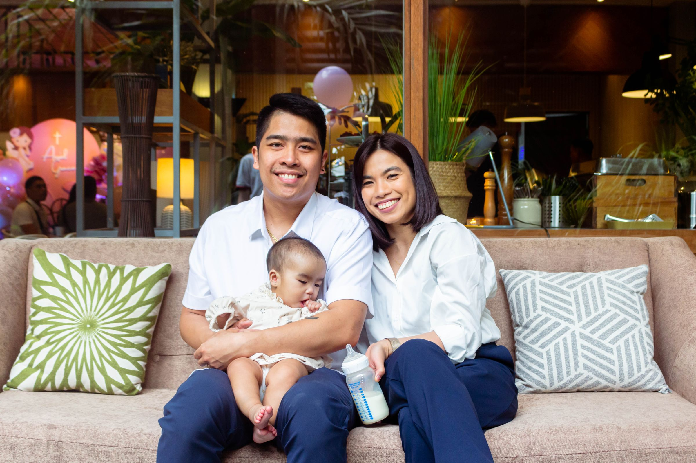

บัตรทอง
สิทธิหลักประกันสุขภาพแห่งชาติ ดูแลโดย สปสช. (สำนักงานหลักประกันสุขภาพแห่งชาติ)

คุยเรื่องประกัน กับ [ชื่อตัวแทน]
ไม่ใช่เพราะกลัว
แต่เพราะไม่อยากให้คนที่เรารัก
ต้องแบกภาระแทนเรา
ข้อมูล ณ ตุลาคม 2569
เจ็ดวันที่งานหยุด
แต่ค่าใช้จ่ายไม่หยุดตามเรา
ใช้สิทธิไหน ต้องรอคิวไหม อยากเลือกโรงพยาบาลเองได้หรือเปล่า
ค่าบ้าน ค่ารถ ค่าเทอมลูก ยังเดินต่อทุกเดือน แม้เราจะหยุดงาน
เงินเกษียณ เงินเรียนลูก ไม่ควรต้องถูกดึงมาจ่ายค่ารักษา
เล่าไม่ใช่เพื่อให้กลัว แต่อยากให้เห็นภาพตรงกัน แล้ววางแผนได้ทัน
สาเหตุการเสียชีวิตอันดับ 1 ของคนไทย ปี 2566
1 จุด คือ 1 คน เฉลี่ยวันละราว 236 คน (คำนวณจาก 86,310 ÷ 365)
ผู้ป่วยมะเร็งรายใหม่ในแต่ละปี
เสียชีวิตจากอุบัติเหตุทางถนน ปี 2567
ที่มา: สำนักงานสถิติแห่งชาติ และ Thai PBS (มะเร็ง ปี 2566) / ทะเบียนมะเร็ง 2565 ผ่าน Thai PBS และกรุงเทพธุรกิจ / กรมควบคุมโรค และ TNN (อุบัติเหตุทางถนน ปี 2567)
และเราอายุยืนขึ้น คนไทยอายุ 60 ปีขึ้นไปมีมากกว่า 20%
หรือมากกว่า 1 ใน 5 คน ไทยเป็น “สังคมสูงอายุโดยสมบูรณ์” แล้ว
ตัวอย่างคำนวณ
ค่ารักษา 100,000 บาท วันนี้
ถ้าเพิ่มปีละ 10.8%
อีก 10 ปี อาจกลายเป็นราว
บาท
วันนี้อีก 10 ปี
เป็นตัวอย่างประกอบการอธิบาย ไม่ใช่การพยากรณ์
ที่มา: ทะเบียนราษฎร ธ.ค. 2566 (ThaiPublica) และ Thai PBS Policy Watch (ผู้สูงอายุ) / WTW และ The Standard (ค่ารักษา 10.8%) / The Standard และ Thai PBS (เงินเฟ้อทั่วไป 0.7%)
สิทธิหลักประกันสุขภาพแห่งชาติ ดูแลโดย สปสช. (สำนักงานหลักประกันสุขภาพแห่งชาติ)
รักษาฟรีในหน่วยบริการตามสิทธิ ครอบคลุมโรคส่วนใหญ่
ฉุกเฉินวิกฤตเข้าได้ทุกโรงพยาบาล ตามสิทธิ UCEP (เจ็บป่วยฉุกเฉินวิกฤต มีสิทธิทุกที่)
ต้องใช้หน่วยบริการและระบบส่งต่อตามสิทธิ
ยาและการรักษาตามบัญชีที่กำหนด
ไม่มีเงินชดเชยรายได้ที่หายไป
ดูแลโดย สปส. (สำนักงานประกันสังคม)
รักษาที่โรงพยาบาลตามสิทธิที่เลือกไว้
เงินทดแทนการขาดรายได้ช่วงเจ็บป่วย ตามเงื่อนไข
บำนาญหรือบำเหน็จชราภาพ เมื่อส่งเงินสมทบครบเงื่อนไข
ใช้ได้เฉพาะโรงพยาบาลตามสิทธิ
เงินทดแทนคิดจากค่าจ้างไม่เกิน 17,500 บาท/เดือน (ตั้งแต่ปี 2569)
บำนาญอาจไม่พอค่าใช้จ่ายหลังเกษียณ
CSMBS (สวัสดิการรักษาพยาบาลข้าราชการ) ดูแลโดยกรมบัญชีกลาง
เบิกค่ารักษาในโรงพยาบาลรัฐ
ครอบคลุมพ่อแม่ คู่สมรส และบุตร ตามเงื่อนไข
โรงพยาบาลเอกชนเบิกได้จำกัด เช่น กรณีฉุกเฉิน
ค่าห้องพิเศษเบิกได้ตามอัตราที่กำหนด
ทุกสิทธิช่วยค่ารักษาพื้นฐานได้ดี แต่ไม่ได้ออกแบบมาเพื่อทดแทนรายได้ทั้งหมด หรือให้เงินก้อนแก่ครอบครัว
ที่มา: เพดานค่าจ้างประกันสังคม 17,500 บาท จากไทยรัฐ, Thai PBS และกรุงศรี / ข้อมูลสิทธิทั่วไปจาก สปสช., สำนักงานประกันสังคม และกรมบัญชีกลาง
จ่ายเงินก้อนเล็กอย่างสม่ำเสมอ ให้บริษัทประกันช่วยรับก้อนใหญ่
ที่เราไม่อยากให้ครอบครัวต้องแบกเอง
ครอบครัวจ่าย
บริษัทประกันรับ
ค่าใช้จ่าย
ก้อนใหญ่
เบี้ยก้อนเล็ก จ่ายสม่ำเสมอ
เมื่อเกิดเรื่อง บริษัทช่วยรับตามกรมธรรม์
เงินก้อนให้ครอบครัว เมื่อเราจากไป
ค่ารักษาพยาบาล เมื่อเจ็บป่วยหรือบาดเจ็บ
CI ย่อมาจาก Critical Illness
เงินก้อนตอนป่วยหนัก
PA ย่อมาจาก Personal Accident
เหตุไม่คาดฝัน เริ่มคุ้มครองทันที
ถ้าวันหนึ่งเราไม่อยู่ ครอบครัวยังมีเงินก้อนไว้ตั้งตัว
และบางแบบใช้ออมระยะยาวได้ด้วย
คุ้มครองตามช่วงเวลาที่กำหนด เบี้ยต่ำ ไม่มีเงินคืนเมื่อครบสัญญา
เหมาะกับ: มีภาระหนี้ ลูกยังเล็ก
คุ้มครองยาวถึงอายุสูง มีมูลค่าเงินสดสะสม
เหมาะกับ: ส่งต่อมรดก วางแผนระยะยาว
จ่ายเมื่อเสียชีวิตหรือครบสัญญา คุ้มครองพร้อมออม
เหมาะกับ: มีเป้าหมายเงินออมชัดเจน
จ่ายเบี้ยช่วงทำงาน รับเงินเป็นงวดเมื่อถึงอายุที่กำหนด
เหมาะกับ: วางแผนเกษียณ ใช้สิทธิลดหย่อน
ประกันชีวิตควบการลงทุนในกองทุนรวม ผลตอบแทนไม่รับประกัน
เหมาะกับ: รับความเสี่ยงการลงทุนได้
สัญญาหลัก กับสัญญาเพิ่มเติม (Rider): ความคุ้มครองสุขภาพ โรคร้ายแรง และอุบัติเหตุ มักซื้อเป็นสัญญาเพิ่มเติม ที่แนบกับกรมธรรม์ประกันชีวิตหลัก
ที่มา: คู่มือประกันภัยฉบับประชาชน ของ คปภ. (สำนักงานคณะกรรมการกำกับและส่งเสริมการประกอบธุรกิจประกันภัย) และ AIA Thailand
ช่วยจ่ายค่ารักษาเมื่อเจ็บป่วยหรือบาดเจ็บ ตามเงื่อนไขและวงเงินในกรมธรรม์
แอดมิตนอนโรงพยาบาล ตามที่แพทย์เห็นว่าจำเป็น
ไปหาหมอแล้วกลับบ้านได้ มักซื้อเพิ่มแยกต่างหาก
ยืดหยุ่น
จ่ายตามจริงภายในวงเงินรวมต่อปีหรือต่อครั้ง ไม่แบ่งวงเงินย่อยมาก
คุมงบ
แบ่งวงเงินเป็นหมวด เช่น ค่าห้อง ค่าผ่าตัด ค่าแพทย์ เบี้ยมักถูกกว่า
มาตรฐานใหม่ ของ คปภ.: กรมธรรม์สุขภาพที่ออกตั้งแต่ 8 พ.ย. 2564 ใช้หมวดความคุ้มครองและเงื่อนไขมาตรฐานเดียวกันทุกบริษัท และกำหนดกรณีที่บริษัทปฏิเสธการต่ออายุได้ไว้ชัดเจน เช่น การฉ้อฉลประกันภัย
คปภ. = สำนักงานคณะกรรมการกำกับและส่งเสริมการประกอบธุรกิจประกันภัย / ที่มา: คำสั่งนายทะเบียน 14/2564 ผ่านกรุงเทพประกันชีวิต และ Prudential Thailand
CI ย่อมาจาก Critical Illness แปลว่า โรคร้ายแรง
แพทย์วินิจฉัยตามเงื่อนไข
รับเป็นเงินก้อน
ไม่ต้องรอใบเสร็จค่ารักษา
ประกันสุขภาพช่วย “ค่ารักษา” ส่วน CI ช่วย “ชีวิตระหว่างรักษา” ทั้งรายได้ที่หายไป และค่าใช้จ่ายนอกโรงพยาบาล
เป็นรายได้ช่วงพักรักษา หรือค่ารักษาที่เกินวงเงินประกันสุขภาพ
บางแบบจ่ายตั้งแต่ระยะเริ่มต้น บางแบบจ่ายเฉพาะระยะรุนแรง
มะเร็ง กล้ามเนื้อหัวใจตาย โรคหลอดเลือดสมอง ไตวาย (ขึ้นกับแบบประกัน)
โดยประมาณ นับจากวันที่กรมธรรม์มีผล ขึ้นกับแบบประกัน
ที่มา (ระยะเวลารอคอย): KTC และหน้าผลิตภัณฑ์สัญญาเพิ่มเติมของ AIA / ตัวเลขต่างกันตามแบบประกัน ควรดูในกรมธรรม์จริง
PA ย่อมาจาก Personal Accident แปลว่า อุบัติเหตุส่วนบุคคล
วัน ระยะรอคอย
อุบัติเหตุเกิดได้ทุกเมื่อ ความคุ้มครองจึงเริ่มทันที
(เทียบกับประกันสุขภาพ โรคทั่วไปรอ 30 วัน)
จ่ายตามตารางผลประโยชน์ เช่น แบบ อ.บ.1 หรือ อ.บ.2
จ่ายค่ารักษาตามจริงต่อครั้ง ไม่เกินวงเงินที่เลือก
อาชีพเสี่ยงมากเบี้ยสูงกว่า อายุไม่ใช่ปัจจัยหลักเหมือนประกันสุขภาพ
มี พ.ร.บ. รถแล้วพอไหม? พ.ร.บ. รถ (ประกันภัยรถภาคบังคับ) มีวงเงินคุ้มครองจำกัด อาจไม่พอสำหรับอุบัติเหตุรุนแรง ประกันอุบัติเหตุช่วยเติมทั้งค่ารักษาและเงินก้อน
อ.บ.1 = จ่ายกรณีเสียชีวิต สูญเสียอวัยวะ สายตา หรือทุพพลภาพถาวรสิ้นเชิง / อ.บ.2 = แบบ อ.บ.1 ที่ขยายรวมทุพพลภาพถาวรบางส่วน
ไม่จำเป็นต้องมีครบทุกแบบพร้อมกัน แต่ควรรู้ว่าบ้านเราเปิดรับความเสี่ยงด้านไหนอยู่
ที่มา: ภาษี จากกรมสรรพากร (คู่มือ ภ.ง.ด.91 ปีภาษี 2568) และสมาคมประกันชีวิตไทย / ระยะเวลารอคอย จากเงื่อนไขมาตรฐานใหม่ (aia-fa.com) และ KTC ควรตรวจในกรมธรรม์จริง
ตอบตามจริงทุกข้อ
จะได้เคลมราบรื่น
การแถลงสุขภาพ
ถ้าปกปิดหรือแถลงเท็จ บริษัทอาจบอกล้างสัญญาได้ ตาม ป.พ.พ. (ประมวลกฎหมายแพ่งและพาณิชย์) มาตรา 865
ข้อยกเว้น
โรคหรืออาการที่เป็นอยู่ก่อนทำประกัน อาจเป็นข้อยกเว้นตามเงื่อนไขกรมธรรม์ จึงควรแถลงให้ครบตั้งแต่ตอนสมัคร
ข้อโต้แย้ง
ประกันชีวิตที่มีผลมาแล้ว 2 ปี บริษัทจะยกเรื่องการแถลงไม่ครบมาบอกล้างสัญญาไม่ได้ (ยกเว้นกรณีฉ้อฉล)
นับจากวันที่กรมธรรม์มีผล
วันที่ 0
ครบ 2 ปี
บริษัทยกเรื่องการแถลงไม่ครบมาโต้แย้งไม่ได้แล้ว (เฉพาะประกันชีวิต)
ที่มา: ไทยรัฐ Money และ Legardy (ระยะโต้แย้ง 2 ปี) / ป.พ.พ. มาตรา 865 / คปภ. และ AIA Thailand (การแถลงข้อมูลและข้อยกเว้น)
วันที่ 0
เริ่มนับ
ซื้อผ่านตัวแทน เปลี่ยนใจขอยกเลิกและรับเบี้ยคืนได้ (ซื้อทางโทรศัพท์ 30 วัน)
อุบัติเหตุคุ้มครองทันที ไม่ต้องรอ
ขึ้นกับแบบประกัน
เช่น เนื้องอก ซีสต์ นิ่ว ริดสีดวงทวาร ไส้เลื่อน ต้อกระจก
31 วัน ระยะผ่อนผันชำระเบี้ย
Grace period: จ่ายเบี้ยช้าได้ โดยความคุ้มครองยังมีผล นับจากวันครบกำหนดชำระแต่ละงวด
กรมธรรม์สุขภาพที่เริ่มคุ้มครองตั้งแต่ 20 มี.ค. 2568 เมื่อต่ออายุ ถ้าปีที่ผ่านมาเคลมผู้ป่วยในตั้งแต่ 3 ครั้ง และยอดเคลมโรคทั่วไปไม่รุนแรงถึง 200% ของเบี้ย หรือเคลมโรคทั่วไปถึง 400% ของเบี้ย ปีถัดไปต้องร่วมจ่าย 30% (เข้าทั้งสองเกณฑ์ 50%) และพิจารณาใหม่ทุกปี
ที่มา: คปภ. และสภาองค์กรของผู้บริโภค (Free-look) / aia-fa.com (รอคอย 30 และ 120 วัน) / KTC (CI) / AIA Thailand และ Prudential (ผ่อนผัน) / InfoQuest และไทยรัฐ (Copayment)
ปีภาษี 2568–2569
เพดานยังเท่าเดิมทั้งสองปีภาษี
กรมธรรม์ 10 ปีขึ้นไป
รวมกับประกันชีวิตแล้วไม่เกิน 100,000 บาท
พ่อแม่ต้องมีเงินได้ไม่เกิน 30,000 บาทต่อปี
15% ของเงินได้ และรวมกับกองทุนเพื่อการเกษียณอื่นไม่เกิน 500,000 บาท
ตัวอย่าง ถ้าเงินได้ส่วนที่ลดหย่อนอยู่ในขั้นภาษี 10% การลดหย่อนเบี้ยประกันชีวิตและสุขภาพรวม 100,000 บาท ช่วยลดภาษีได้ 10,000 บาท (ขั้น 20% ลดได้ 20,000 บาท)
อย่าลืม แจ้งความประสงค์ให้บริษัทประกันส่งข้อมูลเบี้ยให้กรมสรรพากร (กรมธรรม์ที่เริ่มตั้งแต่ 1 ม.ค. 2563) และหักได้เฉพาะเบี้ยส่วนที่เข้าเงื่อนไข ตามหนังสือรับรองของบริษัท
ที่มา: กรมสรรพากร (คู่มือ ภ.ง.ด.91 ปีภาษี 2568 และรายการกฎหมายออกใหม่ ถึง 27 ต.ค. 2569) / สมาคมประกันชีวิตไทย / กองทุนเพื่อการเกษียณอื่น เช่น กองทุนสำรองเลี้ยงชีพ และ RMF (กองทุนรวมเพื่อการเลี้ยงชีพ)
ตัวอย่างแนวคิด
ไม่ใช่คำแนะนำเฉพาะบุคคล
ประมาณ 22–30 ปี
สร้างฐานความคุ้มครองตอนสุขภาพดี เบี้ยยังไม่สูง เริ่มออมและใช้สิทธิลดหย่อน
ควรดู: สุขภาพ อุบัติเหตุ
ประมาณ 30–45 ปี
มีคนพึ่งพิงและภาระหนี้ ทุนประกันชีวิตควรครอบคลุมหนี้และค่าเลี้ยงดู ทบทวนผู้รับประโยชน์
ควรดู: ชีวิต สุขภาพ โรคร้ายแรง
ประมาณ 45–60 ปี
ความเสี่ยงโรคร้ายแรงสูงขึ้น เตรียมวงเงินสุขภาพให้พอ เริ่มวางแผนเกษียณ เช่น ประกันบำนาญ
ควรดู: โรคร้ายแรง สุขภาพ ชีวิต
60 ปีขึ้นไป
ดูแลค่ารักษาระยะยาว วางแผนส่งต่อให้ลูกหลาน และตรวจเงื่อนไขการต่ออายุสัญญา
ควรดู: สุขภาพ ชีวิต
ไม่ระบุราคา เพราะเบี้ยขึ้นกับอายุ เพศ สุขภาพ และแผนที่เลือก
พ.ศ. 2481
AIA เริ่มดำเนินธุรกิจในไทย
26.2%
ส่วนแบ่งตลาดเบี้ยประกันชีวิตรวม อันดับ 1 ปี 2568
ประกันสุขภาพ สัญญาเพิ่มเติม ต้องแนบกับสัญญาหลัก
ค่ารักษาแบบเหมาจ่าย สูงสุด 120 ล้านบาทต่อปี เลือกพื้นที่คุ้มครองได้ถึงทั่วโลก รับอายุ 18–75 ปี
แผน Begin และ Balanced แบบมีส่วนร่วมจ่าย (Copayment) เบี้ยเข้าถึงง่าย รับอายุ 15 วัน–75 ปี
เงินชดเชยรายได้รายวันเมื่อนอนโรงพยาบาล รับอายุ 15 วัน–70 ปี
โรคร้ายแรง (CI)
คุ้มครองชีวิตและโรคร้ายแรง 62 โรคทุกระยะ เคลมได้หลายครั้ง คุ้มครองถึงอายุ 99 ปี
โรคร้ายแรง 62 โรคทุกระดับ เคลมซ้ำได้สูงสุด 11 ครั้ง
โรคร้ายแรงระดับรุนแรง 44 โรค จ่ายครั้งเดียว
ค่ารักษาแบบเหมาจ่ายหลังตรวจพบโรคร้ายแรง 62 โรค สูงสุด 12 ล้านบาทต่อปี
ข้อมูลจากหน้าผลิตภัณฑ์บน aia.co.th ณ 28 ต.ค. 2569 และสมาคมประกันชีวิตไทย (ส่วนแบ่งตลาด) ความคุ้มครองเป็นไปตามกรมธรรม์ ควรทำความเข้าใจรายละเอียดก่อนตัดสินใจ
ตัวอย่างแผนจริงของ AIA (ไม่ระบุราคา)
Non Par คือแบบไม่มีเงินปันผล
ประกันชีวิต ตลอดชีพ
ตลอดชีพ คุ้มครองถึงอายุ 99 ปี เลือกชำระเบี้ย 10, 15 หรือ 20 ปี
ชำระเบี้ย 20 ปี คุ้มครองถึงอายุ 99 ปี รับ 100% ของทุนประกันเมื่อเสียชีวิตหรือครบสัญญา
ออมทรัพย์และบำนาญ
แบบสะสมทรัพย์ ออมพร้อมความคุ้มครองชีวิต
ประกันบำนาญ รับเงินเป็นงวดหลังเกษียณ
ประกันบำนาญ คุ้มครองถึงอายุ 90 ปี
ยูนิตลิงค์ และอุบัติเหตุ
ควบการลงทุน รับอายุ 15 วัน–70 ปี คุ้มครองถึงอายุ 99 ปี มีความเสี่ยงจากการลงทุน
ตัวอย่าง AIANPA4600: เสียชีวิต สูญเสียอวัยวะ ทุพพลภาพถาวรสิ้นเชิง 600,000 บาท ค่ารักษาจากอุบัติเหตุสูงสุด 100,000 บาทต่อครั้ง
AIA Vitality: สะสมคะแนนจากการดูแลสุขภาพ รับสิทธิประโยชน์ตามสถานะ 4 ระดับ
ข้อมูลจาก aia.co.th ณ 28 ต.ค. 2569 / ยูนิตลิงค์มีความเสี่ยงจากการลงทุน ผู้ซื้อควรศึกษาข้อมูลก่อนตัดสินใจ
สิทธิรัฐดูแลค่ารักษาพื้นฐานได้ดี แต่มีเงื่อนไขเรื่องสถานพยาบาล และไม่ได้ทดแทนรายได้ทั้งหมด ประกันช่วยเติมส่วนนี้
ซื้อตอนสุขภาพดี ผ่านการพิจารณาง่ายกว่าและเบี้ยมักถูกกว่า ถ้าป่วยก่อนซื้อ โรคนั้นอาจกลายเป็นข้อยกเว้น
ประกันไม่ได้ทำให้ป่วย แค่ทำให้วันที่ป่วย ครอบครัวไม่ต้องกังวลเรื่องเงิน
ปี 2567 บริษัทประกันชีวิตจ่ายเงินตามกรมธรรม์และค่าสินไหมรวมราว 456,000 ล้านบาท ปัญหาส่วนใหญ่เกิดจากการแถลงไม่ครบหรือไม่เข้าใจเงื่อนไข ร้องเรียนได้ที่สายด่วน คปภ. 1186
ที่มา: สมาคมประกันชีวิตไทย สถิติธุรกิจประกันชีวิตรายปี 2567 (เงินตามกรมธรรม์ 389,394 ล้านบาท และค่าสินไหม 66,937 ล้านบาท) / สายด่วน คปภ. 1186
ประกันมาเติมส่วนที่ขาด เช่น ทางเลือกโรงพยาบาล รายได้ และเงินก้อนให้ครอบครัว
ชีวิต สุขภาพ โรคร้ายแรง อุบัติเหตุ ดูแลคนละเรื่อง เริ่มจากเรื่องที่บ้านเราเปิดรับความเสี่ยงมากที่สุด
รู้ระยะรอคอย ข้อยกเว้น และระยะเวลาพิจารณากรมธรรม์ ก่อนตัดสินใจ
แต่งงาน มีลูก ซื้อบ้าน เปลี่ยนงาน หรือใกล้เกษียณ เป็นจังหวะที่ควรดูแผนใหม่
ซื้อตอนสุขภาพดี ผ่านการพิจารณาง่ายกว่า และเบี้ยมักถูกกว่า
ช่วยดูสิทธิที่มีอยู่ หาช่องว่าง และเทียบแผนให้เหมาะกับงบของบ้านคุณ ไม่มีข้อผูกมัด
[ชื่อตัวแทน]
ตัวแทนประกันชีวิต / เลขที่ใบอนุญาต [เลขที่ใบอนุญาตตัวแทน]
โทร [เบอร์โทร]
LINE: [LINE ID]
ตรวจสอบใบอนุญาตตัวแทนได้ที่เว็บไซต์ คปภ. (สำนักงานคณะกรรมการกำกับและส่งเสริมการประกอบธุรกิจประกันภัย) / สายด่วน คปภ. 1186